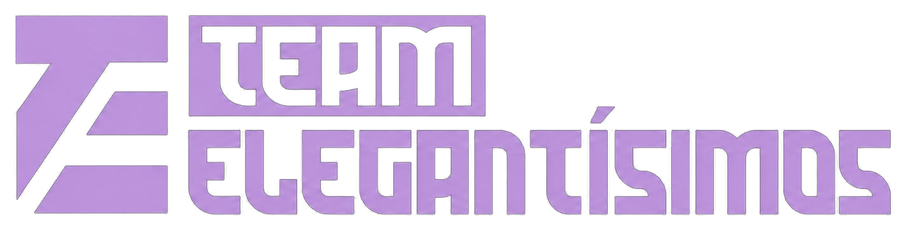

TEAM • ELEGANTÍSIMOS
Activa tu cámara
Desliza los filtros · sonríe para activarlos
Corona · Elegantísimos blanco
ELEGANTÍSIMOS ✦ COLLECTION
EXPERIENCIA AR
¡Somos Elegantísimos!
Tu sonrisa, tu estilo. Descubre nuestras coronas y lentes, desliza para elegir tu favorito y captura el momento.
Tu imagen se procesa en el dispositivo. No subimos tus fotos a ningún servidor.